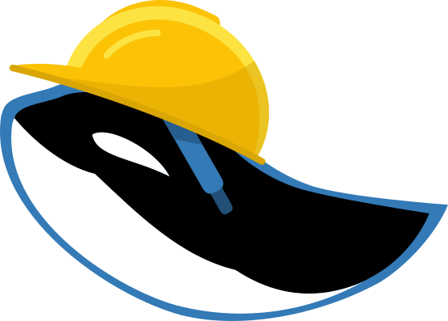

<link rel="import" href="../../bower_components/polymer/polymer.html">

<link rel="import" href="../../bower_components/iron-flex-layout/iron-flex-layout-classes.html">

<link rel="import" href="../shared-styles.html">

<dom-module id="orca-under-construction">
    <template>
        <style is="custom-style" include="shared-styles iron-flex iron-flex-alignment">
        :host {
            display: block;
            padding: 10px;
            text-align: justify;
        }
        
        img {
            align-self: center;
            max-width: 200px;
        }
        </style>

        <div class="layout vertical">
            
        </div>
        <h1>Cette page est en cours de construction.</h1>
        <p>
            Merci de votre compr&eacute;hension. Revenez bient&ocirc;t pour acc&eacute;der &agrave; ce nouveau contenu&nbsp;! Si cette page a &eacute;t&eacute; <span class="quote">en construction</span> depuis suspicieusement longtemps, merci de bien vouloir <a href="mailto:infos@orca-solution.com">nous contacter</a> pour nous le signaler.
        </p>
    </template>

    <script>
    Polymer({
        is: 'orca-under-construction'
    });
    </script>
</dom-module>
